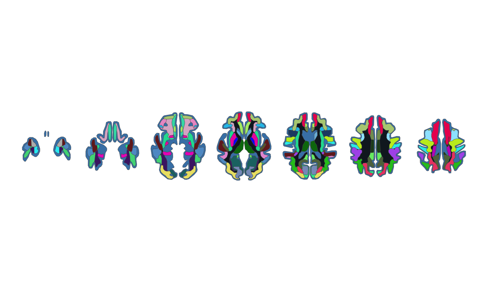

Desikan-Killiany white-matter parcellation atlas for the ggseg ecosystem.
ggsegDKwm provides the Desikan-Killiany white-matter parcellation (wmparc, cortical labels projected into the white matter) together with the basal-ganglia structures (caudate, putamen, pallidum, thalamus) as a ggseg_atlas object with axial slice views, in symmetric fsaverage_sym template space. Cortical grey matter is merged into a single background label.
Installation
# with pak (recommended — resolves ggsegverse dependencies automatically)
# install.packages("pak")
pak::pak("gbarisano/ggsegDKwm")
# or with remotes
# remotes::install_github("gbarisano/ggsegDKwm")Usage
Plot the full atlas, keeping the atlas’s own colour palette:
library(ggseg)
library(ggsegDKwm)
library(ggplot2)
ggplot() +
geom_brain(atlas = dkwm(), aes(fill = label), show.legend = FALSE) +
scale_fill_manual(values = dkwm()$palette, na.value = "grey") +
theme_void()
The atlas ships with several axial views. List them with:
ggseg.formats::atlas_views(dkwm())
#> [1] "axial_09" "axial_11" "axial_13" "axial_15" "axial_18" "axial_21" "axial_24"Colour regions by your own data by joining on region or label, exactly as with the built-in ggseg atlases.
Atlas details
-
Space: symmetric
fsaverage_symFreeSurfer template -
Regions: Desikan-Killiany white-matter parcels (
wm-lh-*,wm-rh-*), basal ganglia (caudate, putamen, pallidum, thalamus), with cortical grey matter merged into a single background label - Views: axial slices
Reference
Desikan RS, Ségonne F, Fischl B, et al. (2006). An automated labeling system for subdividing the human cerebral cortex on MRI scans into gyral based regions of interest. NeuroImage, 31(3):968-980. https://doi.org/10.1016/j.neuroimage.2006.01.021